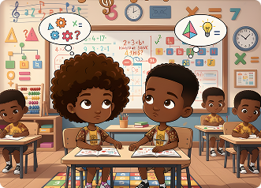

O pensamento computacional que pulsa no samba reggae
A percussão Afro-baiana como estratégia de computação desplugada para o ensino do pensamento computacional.
Saiba mais →
Ludicidade
By learning about constellations, the sky becomes a map for kids. Learn about the stars, planets, and constellations that will help you understand the universe.
Saiba maisPilares
Exploring different exhibits helps children develop critical thinking and a deeper understanding of the world around them.
Saiba maisComparing & Signing
From scientific journals to art projects, comparing and contrasting concepts is an essential part of education.
Saiba maisO que é Computação Desplugada?
A computação desplugada é uma metodologia de ensino que introduz conceitos de ciências da computação, algoritmos e lógica (como números binários e criptografia) sem utilizar computadores ou dispositivos eletrônicos.
- Atividades dinâmicas e lúdicas
- Materiais concretos (papel, cartas, jogos) e movimento físico.
- Focando no desenvolvimento do pensamento computacional

Recursos
Professores e alunos
Recurssos didáticos
Divididos no formato de 4 aulas, os materiais didáticos disponibilizados dispõem de atividades desplugadas que através da intersecção entre os pilares e os principais elementos do pensamento computacional, compõem dinâmicas lúdicas e ações interdisciplinares.
A DEFINIR
We bring learning to life with engaging activities, real-world connections, and a focus on making every moment exciting.
Saber mais →A DEFINIR
Our learning environment is designed to inspire curiosity and creativity, fostering a love for exploration and academic growth.
Saber mais →Descubra Mais
História do samba reggae
Explore our fun and engaging learning opportunities and let your child thrive.
View All →Documentário sobre Percussão
Stay informed with our latest news and articles about modern education.
View All →Registros das atividades
Discover how TAMBRAINS can help build confidence and a lifelong love for learning.
View All →